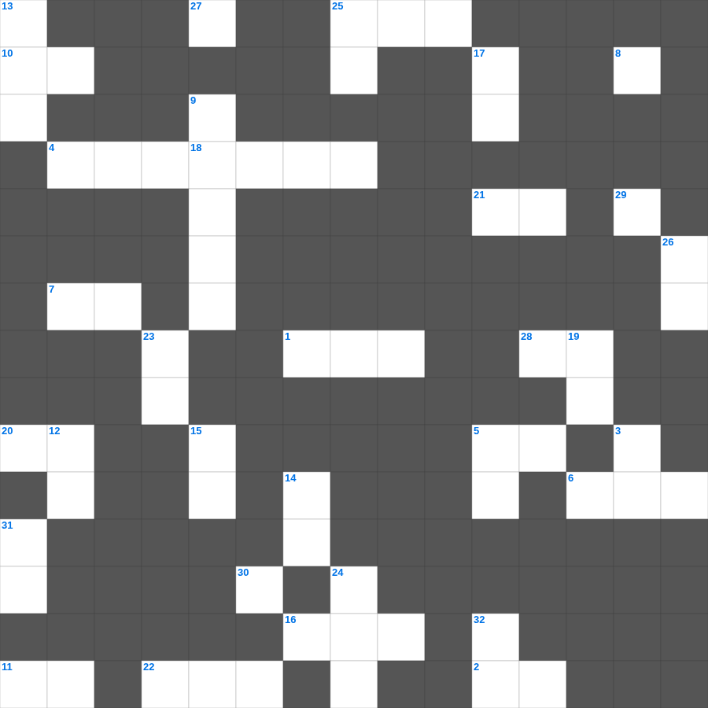

데살로니가전서 마스터 50
📌 서비스 정의
십자가로세로는 교회 주보와 주일학교에서 사용할 수 있는 성경 기반 가로세로 퍼즐 서비스입니다. 성경 인물, 사건, 핵심 구절을 바탕으로 제작되었습니다. 온라인 풀이 및 인쇄 기능을 제공합니다.
📖 데살로니가전서란?
데살로니가전서는 바울이 데살로니가 교회의 믿음을 격려하며, 그리스도의 재림과 성도의 거룩한 삶에 대해 가르치는 서신입니다.
📚 데살로니가전서의 주요 사건·주제
데살로니가 교회의 믿음에 대한 감사 · 거룩한 삶에 대한 권면 · 그리스도의 재림에 대한 가르침 · 죽은 자의 부활에 대한 소망 · 항상 기뻐하라는 권면
데살로니가전서를 주제로 한 데살로니가전서 주일학교 퀴즈입니다. 35개의 단어를 맞춰보세요! 가로세로 낱말 퍼즐 형식으로 데살로니가전서의 핵심 내용을 재미있게 복습할 수 있습니다.

📝 가로 힌트
1. 그리스도도 많은 사람의 죄를 담당하시려고 단번에 드리신 바 되셨고 구원에 이르게 하기 위하여 죄와 상관 없이 자기를 바라는 자들에게 이것 나타나시리라
2. 갈라디아서의 핵심 주제 중 하나: 율법으로부터의 이것
4. 마가의 어머니 마리아의 집에서 일어난 신약의 큰 사건
5. 시온의 딸아 크게 기뻐할지어다... 보라 네 왕이 네게 임하시나니 그는 공의로우시며 구원을 베푸시며 겸손하여서 이것을 타시나니
6. 오네시모가 원래 살던 동네 (빌레몬의 집이 있던 곳)
7. 이러한 사람은 네가 아는 바와 같이 이것하여서 스스로 정죄한 자로서 죄를 짓느니라
8. 나더러 주여 주여 하는 자마다 다 천국에 들어갈 것이 아니요 다만 하늘에 계신 내 아버지의 이것대로 행하는 자라야
10. 너희는 악을 미워하고 선을 사랑하며 성문에서 이것을 세울지어다
11. 바울은 오네시모를 자신의 무엇이라고 불렀나 (신체의 일부)
16. 그가 시험을 받아 고난을 당하셨은즉 시험 받는 자들을 능히 무엇하실 수 있느니라
20. 도리어 사랑으로써 이것하노라 나이가 많은 나 바울은 지금 또 예수 그리스도를 위하여 갇힌 자 되어
21. 황소와 염소의 피가 능히 죄를 이것하지 못함이라
22. 하나님이 우리를 깨끗하게 하사 무엇을 열심히 하는 백성이 되게 하시나
25. 에베소에서 은으로 아르테미스(다이아나) 신전 모형을 만들다 소동을 일으킨 데메드리오의 직업
28. 젊은 자들아 이와 같이 장로들에게 순종하고 다 서로 이것으로 허리를 동이라
29. 요한일서 3장 24절: 그의 계명을 지키는 자는 주 안에 거하고 주는 그의 이것에 거하시나니
📝 세로 힌트
3. 요한이서의 발신자: 자신을 '이것'이라 칭함
5. 예수께서 산에서 내려오시니 한 이것 환자가 나아와 절하며 이르되
9. 여호와는 선하시며 환난 날에 이것이시라 그는 자기에게 피하는 자들을 아시느니라
10. 두 마음을 품어 모든 일에 이것이 없는 자로다
12. 우리가 이같이 큰 이것을 등한히 여기면 어찌 그 보응을 피하리요
13. 디도서 1장에서 할례파의 입을 막으라고 한 이유: 무엇을 무너뜨리기 때문인가
14. 너희가 자기를 위하여 공의를 심고 이것을 거두라
15. 그리스도를 위하여 받는 수모를 애굽의 모든 보화보다 더 큰 이것으로 여겼으니 이는 상 주심을 바라봄이라
17. 아모스가 사역했던 주요 장소 (북이스라엘의 성소)
18. 학개서의 주요 사명
19. 너의 상처는 고칠 수 없고 네 부상은 중하도다 네 소식을 듣는 자가 다 너를 보고 이것을 치나니
23. 보라 그의 마음은 교만하며 그 속에서 정직하지 못하나 의인은 그의 이것으로 말미암아 살리라
24. 사랑하는 자들아 너희는 너희의 지극히 거룩한 믿음 위에 자신을 이것하며
25. 디도서의 마지막 인사말: 이것이 너희 무리에게 있을지어다
26. 예수께서 고향에서 배척받으실 때 선지자가 자기 고향과 이것 외에서는 존경을 받지 못함이 없느니라
27. 스가랴 13장에서 죄와 더러움을 씻는 이것이 예루살렘에 열리리라
30. 아모스 5:4, '너희는 나를 찾으라 그리하면 이것리라'
31. 바울이 자기 때에 전도로 나타내신 것
32. 그러므로 너희는 가서 모든 민족을 이것으로 삼아 아버지와 아들과 성령의 이름으로 세례를 베풀고
🧩 이 퍼즐에서 배우는 내용
이 퍼즐은 데살로니가전서 마스터 50의 핵심 단어와 개념을 자연스럽게 복습할 수 있도록 구성되었습니다. 주일학교 수업이나 개인 성경공부에서 학습 내용을 점검하는 용도로 바로 활용할 수 있습니다.
🧑🏫 교회 교육 자료 활용
이 퍼즐은 주일학교 교재 추천 자료로 활용할 수 있고, 주일학교 주보에 넣기 좋은 분량으로 구성되어 있습니다. 수업용 주일학교 교안에 활동지로 붙이거나, 예배 후 복습용 주일학교 공과교재로 바로 사용할 수 있습니다.
🏷️ 키워드
데살로니가전서 주일학교 퀴즈, 데살로니가전서, 십자가로세로, 성경퀴즈, 말씀퀴즈, 가로세로퍼즐, 주일학교 교재 추천, 주일학교 주보, 주일학교 교안, 주일학교 공과교재